כלים
כלים, משחקים ודפי עזר שבניתי בשביל העבודה שלי ובשביל הסטודנטים שלי, ועכשיו פתוחים לכולם. רובם חינמיים ורצים ישר בדפדפן, בלי הרשמה.
כלים לעבודה
אפליקציות שרצות בדפדפן, סקריפטים לפוטושופ ול־After Effects, ותבניות בריף ללקוחות. כרטיס עם תווית "הורדה" מוריד את הקובץ.
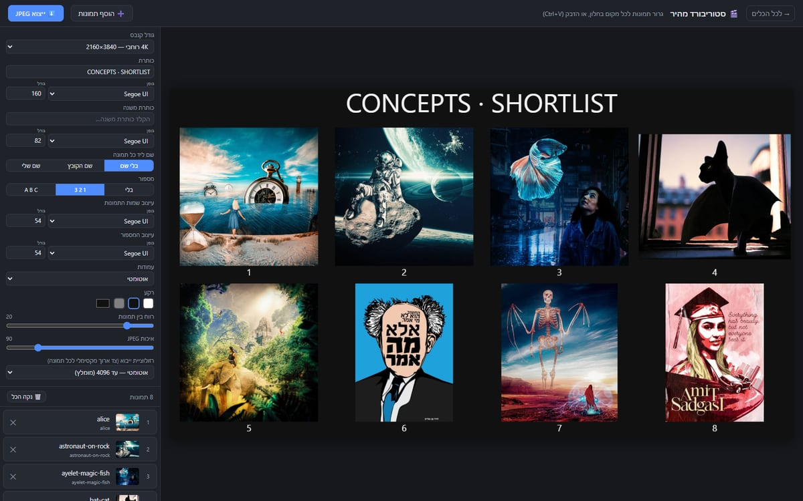
סטוריבורד מהיר גוררים פנימה הרבה תמונות ומקבלים לוח אחד מסודר, עם כותרת, מספור ושמות. יוצא כתמונה אחת עד רזולוציית 8K.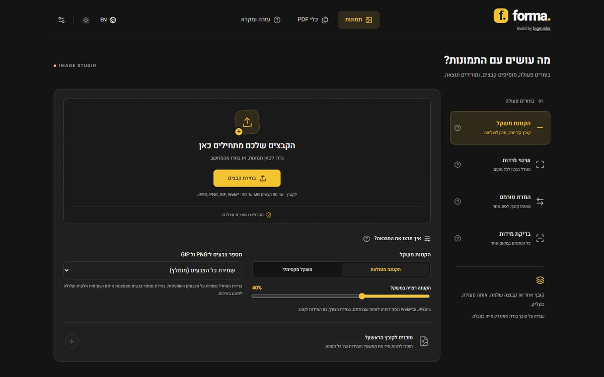
FORMA הקטנת תמונות למשקל שרוצים, שינוי מידות, המרה בין פורמטים, ואיחוד, פיצול ודחיסה של PDF.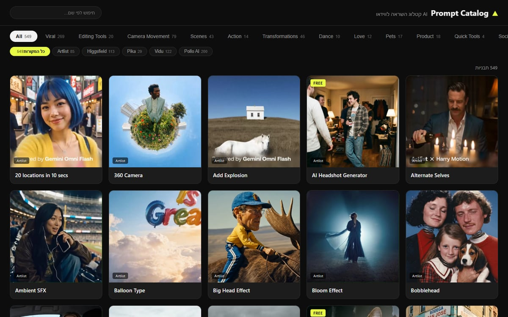
Prompt Catalog 549 תבניות לווידאו AI, לכל אחת סרטון לדוגמה ופרומפט מוכן להעתקה. מסודר לפי נושאים ולפי הפלטפורמה שממנה הגיעה התבנית.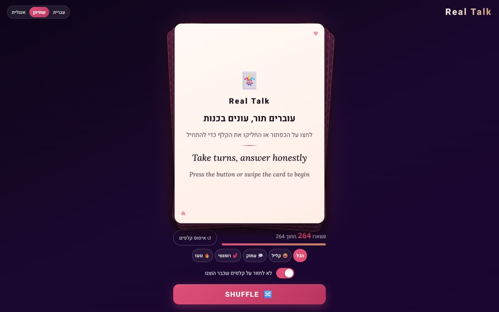
Real Talk 264 קלפי שאלות לשיחות אמיתיות, בעברית, באנגלית או בשתיהן יחד. בוחרים סוג שיחה, מערבבים ושולפים קלף.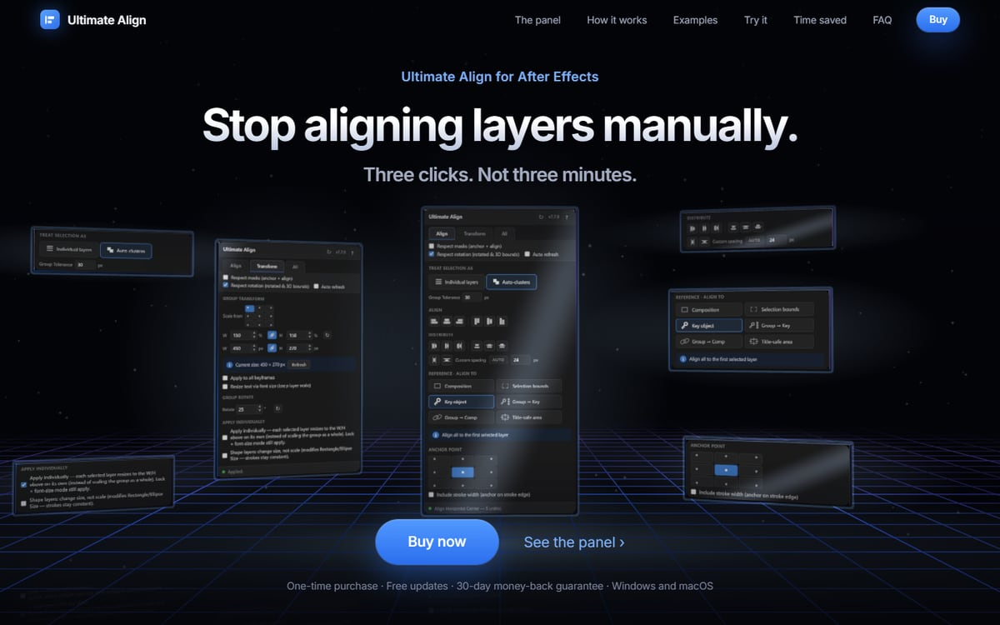
Ultimate Align פאנל ל־After Effects שמיישר, מפזר ומשנה גודל של הרבה שכבות בבת אחת. במקום שלוש דקות, שלוש לחיצות.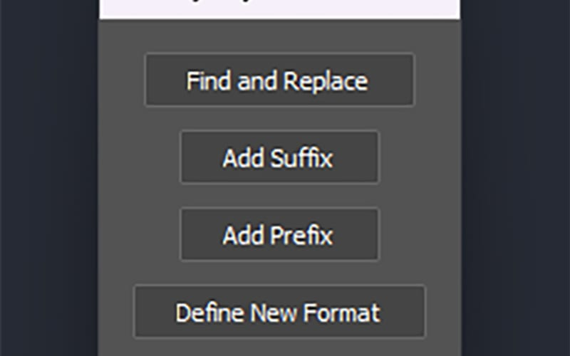
הורדה ↓ שינוי שמות שכבות חיפוש והחלפה בשמות של הרבה שכבות בבת אחת, והוספת מילה לפני או אחרי השם.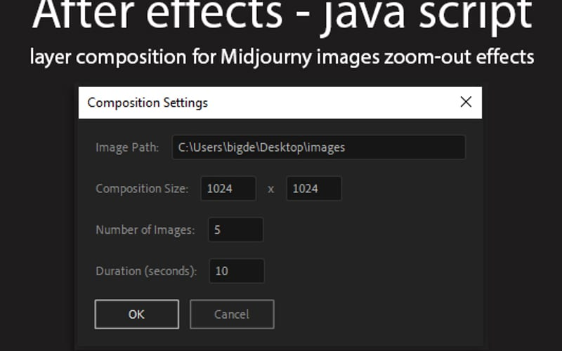
הורדה ↓ זום־אאוט מתמונות Midjourney בונה קומפוזיציה שלמה מתמונות ה־Zoom Out: מגדירים גודל, כמות תמונות ומשך, והזום מוכן.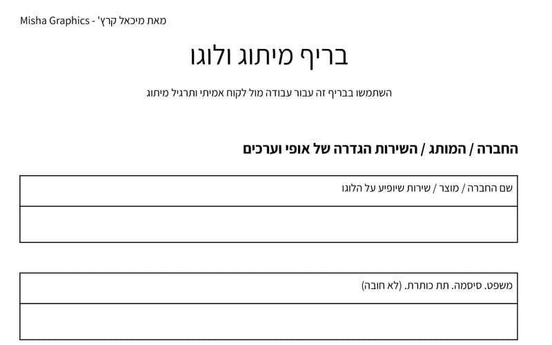
הורדה ↓ בריף מיתוג ולוגו שאלון לפגישה הראשונה עם לקוח: שם וסלוגן, מה החברה מוכרת, מה הסיפור שלה ועוד.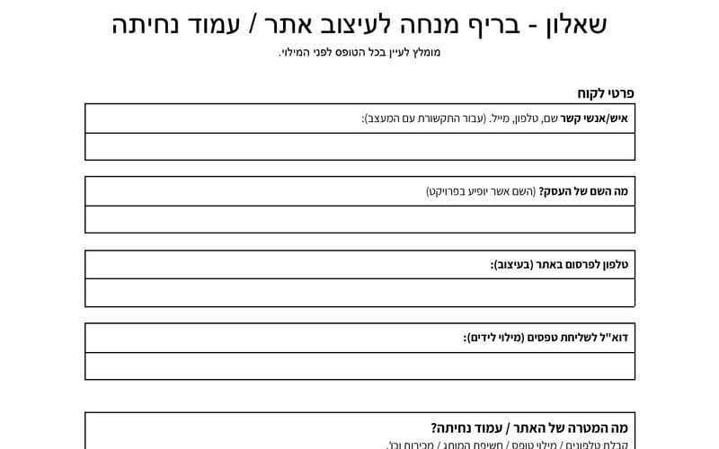
הורדה ↓ שאלון בריף לאתר השאלות שכדאי לשאול לפני שמתחילים לעצב אתר או עמוד נחיתה.חומרי לימוד
משחק, דפי עזר, רשימות ביקורת ומדריכים שהכנתי לסטודנטים שלי. חינם, להדפסה או לשמירה במחשב.
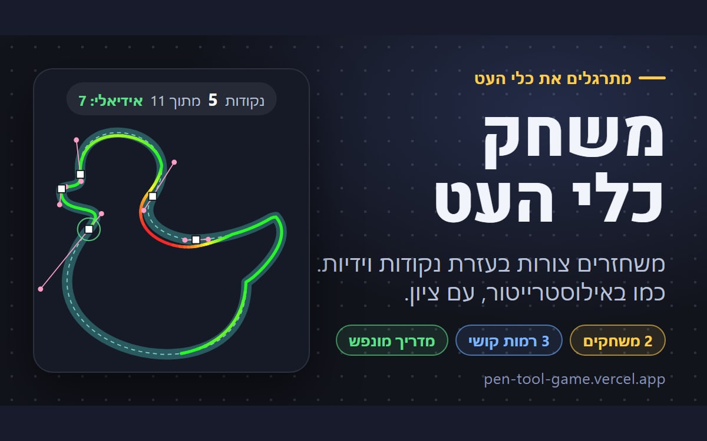
משחק כלי העט משחזרים צורות בעזרת נקודות וידיות, כמו באילוסטרייטור, ומקבלים ציון. מדריך של 9 שלבים, 2 משחקים ו־3 רמות קושי.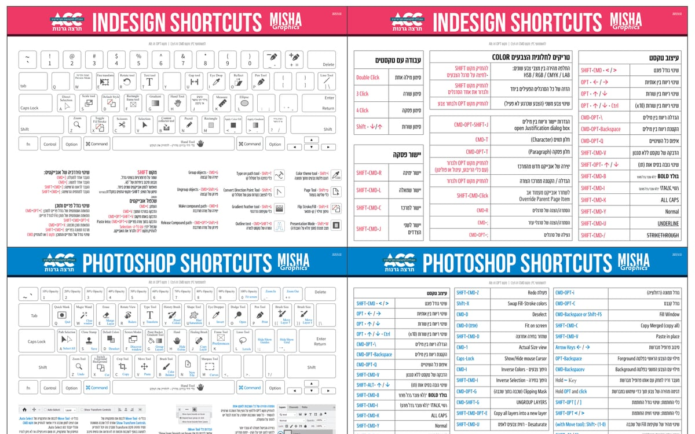
קיצורי מקלדת ל־Adobe מקלדת עם הכלים וטבלאות קיצורים לפי נושא, לכל אחת משלוש התוכנות. להדפסה או לשמירה במחשב, PDF חינם.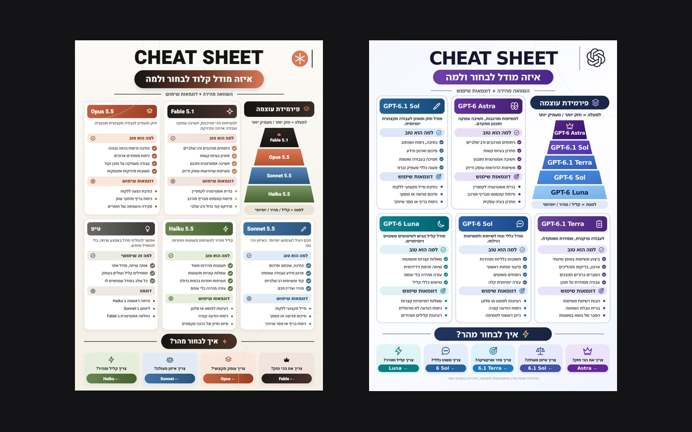
איזה מודל AI לבחור? פירמידת עוצמה, למה כל מודל טוב ודוגמאות שימוש, ל־ChatGPT ול־Claude. PDF חינם.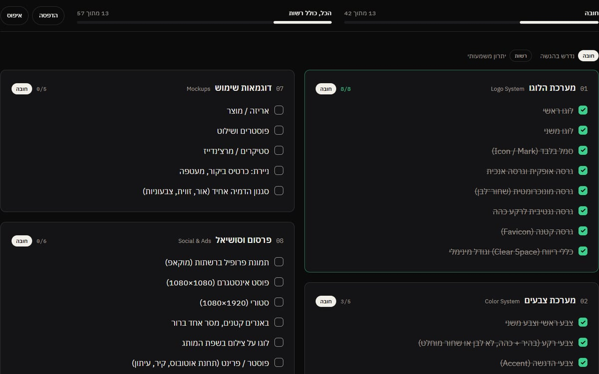
פרויקט מיתוג: רשימת ביקורת כל מה שצריך להיות בהגשה של פרויקט מיתוג, ב־11 חלקים. מסמנים תוך כדי עבודה, והסימונים נשמרים.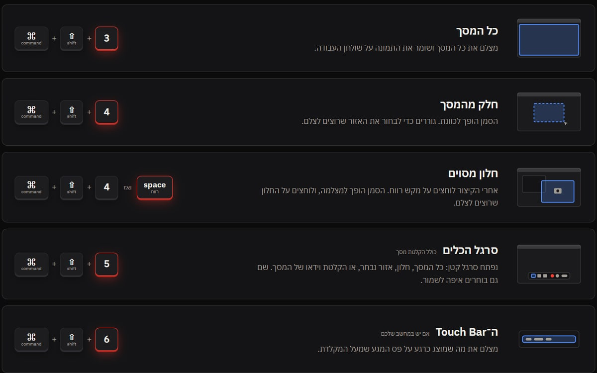
צילום מסך ב־Mac כל המסך, חלק ממנו, חלון מסוים או הקלטת מסך: כל הקיצורים במקום אחד, ואיפה הצילומים נשמרים.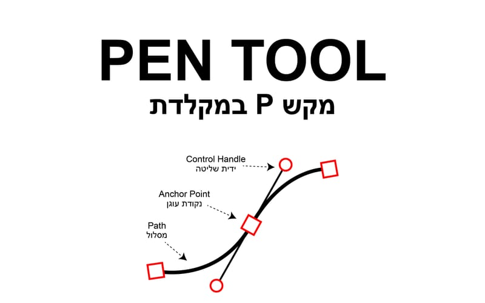
הורדה ↓ תרגיל כלי העט נקודות, ידיות ופינות חדות, עם הקיצורים שצריך לזכור. הולך יד ביד עם המשחק.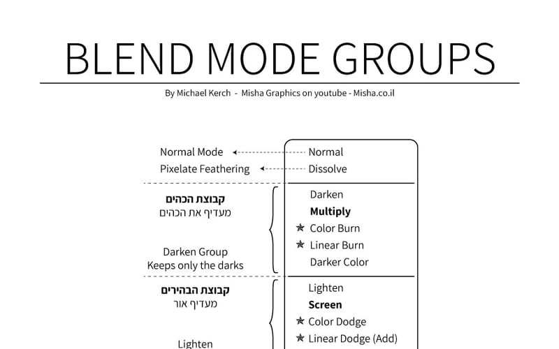
הורדה ↓ מצבי מיזוג כל ה־Blend Modes מחולקים לקבוצות, עם הסבר קצר מה כל קבוצה עושה.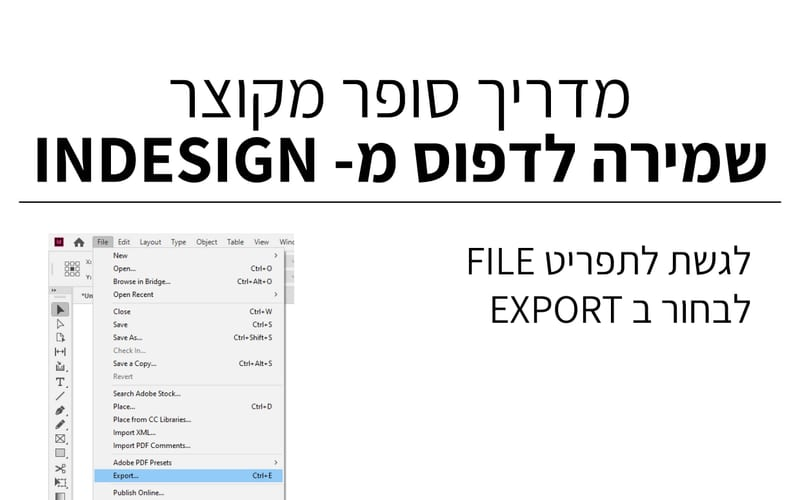
הורדה ↓ שמירה לדפוס מ־InDesign מדריך קצר עם צילומי מסך: איך מוציאים PDF שבית הדפוס יקבל בלי שאלות.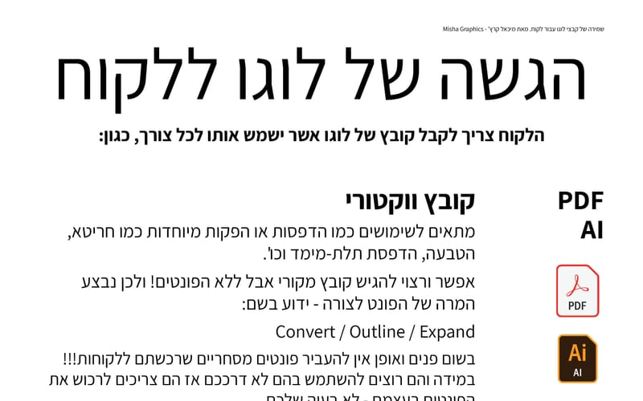
הורדה ↓ הגשת לוגו ללקוח אילו קבצים הלקוח צריך לקבל ולמה: וקטור, תמונה עם רקע ותמונה שקופה.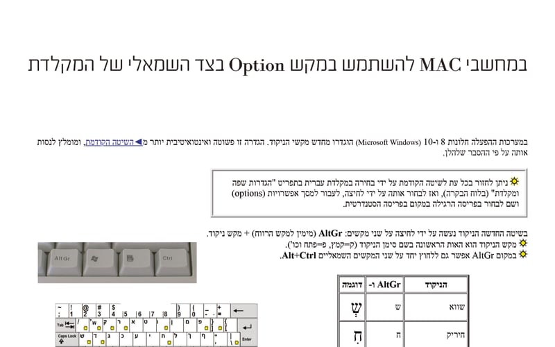
הורדה ↓ ניקוד במקלדת איך מקלידים ניקוד בעברית ב־Mac וב־Windows, עם טבלה של כל הסימנים.